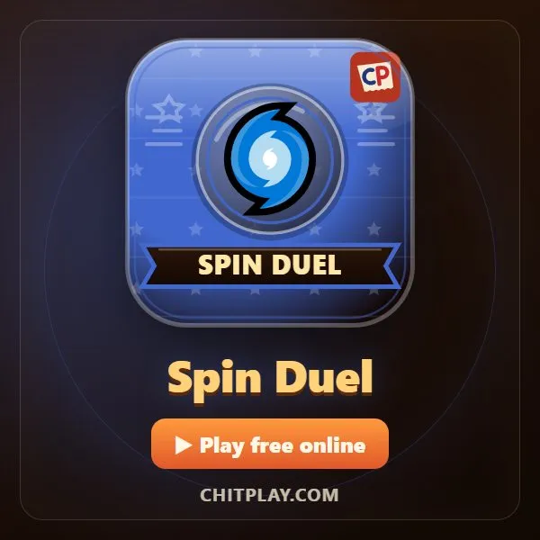
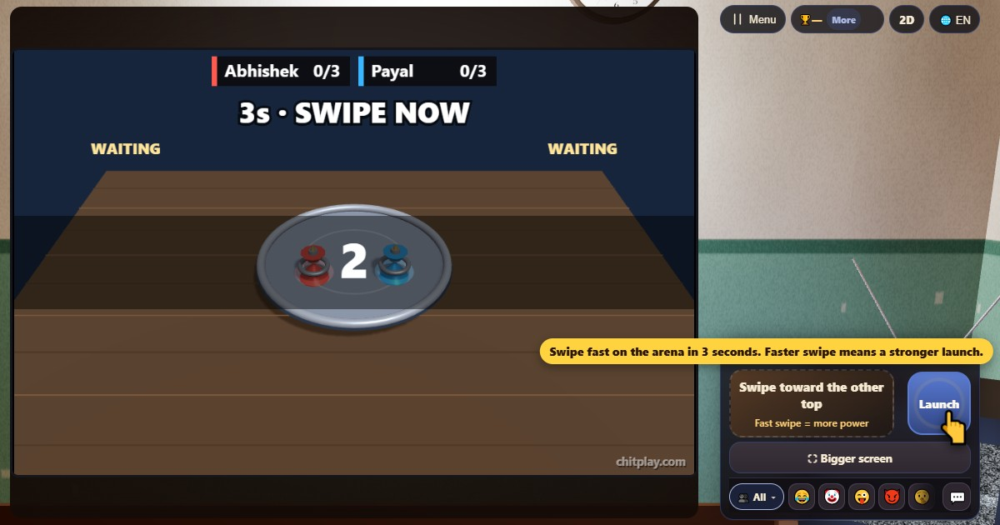

Duelo de trompos (Spin Duel)
- 👥 2 jugadores
- Juegos arcade (en la tele, en 3D)
- 🆓
Guía en español
Lanza tu trompo a una arena escolar en tres segundos. Un giro rápido golpea con más fuerza.
English name: Spin Duel

Cómo se juega
- Desliza rápido hacia tu rival dentro de los tres segundos de lanzamiento. El botón Lanzar es una alternativa accesible.
- Un deslizamiento más largo y rápido da más fuerza a tu peonza. Un lanzamiento por ronda.
- Después del contador, las peonzas giran y chocan solas. Mantén la tuya dentro de la arena y girando.
- La última peonza que sigue girando gana la ronda. Si las dos se paran a la vez, es empate.
- El primero en ganar tres rondas gana la partida. Si los dos fallan tres rondas, la partida termina en empate.
Puntuación
Ganas una ronda sacando a la otra peonza o girando más tiempo que ella. Gana la partida el primero que gana tres rondas.
Quién gana
Juega solo contra un bot, en una pantalla, cerca o en línea. Gana monedas jugando y úsalas para desbloquear estilos de peonza y de arena.
Preguntas frecuentes
¿Cómo lanzo?
Desliza sobre la arena o la zona de deslizar dentro de tres segundos. Cuanto más rápido deslizas, más fuerza.
¿Puedo jugar solo?
Sí. Empieza una partida de dos y la computadora ocupa el otro asiento.
¿Los estilos dan más fuerza?
No. Las peonzas y arenas que desbloqueas son solo estilos visuales.
Formas de jugar
- Como invitado: Sin registro ni inicio de sesión. Elige un nombre y juega al momento.
- Contra la computadora: Cuando no hay nadie, los jugadores de la computadora ocupan los asientos libres. Fácil, normal o difícil.
- Online: Siéntate en una mesa pública con jugadores de todo el mundo.
- Con amigos cerca: Crea la partida en un teléfono y comparte el código o el QR. Tus amigos se unen desde sus teléfonos.
- En un solo teléfono: Pasad el teléfono por turnos: un solo dispositivo basta para toda la familia.
Otros idiomas
- हिन्दी: लट्टू मुकाबला
- Hinglish: Ghoomta Lattu Muqabla
- Português: Duelo de piões
- Français: Duel de toupies
- Deutsch: Kreisel-Duell
- Bahasa Indonesia: Duel Gasing
- Türkçe: Topaç Düellosu
- Italiano: Duello di trottole
- 日本語: ベーゴマ対決
- 한국어: 팽이 대결
- 中文: 陀螺对战
- Русский: Битва волчков
- اردو: لٹو مقابلہ
- नेपाली: लट्टु प्रतिस्पर्धा
- বাংলা: লাটিম যুদ্ধ
- English: Spin Duel · Reglas completas (inglés)
Todos los juegos


En ChitPlay no hay dinero real, apuestas ni premios. Los puntos no tienen valor.